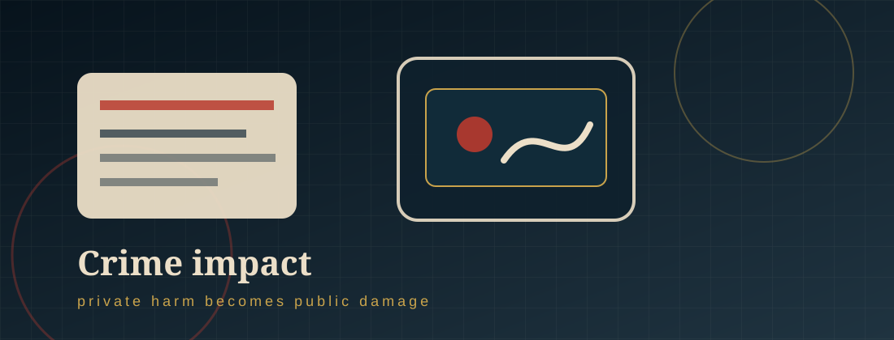

The damage
The Impact of the Crime.
The harm is not limited to one post. It can affect mental health, family life, school, work, reputation, and community safety.

§ 01
Impact on victims and families
- Emotional trauma: Victims may experience fear, shame, anxiety, depression, panic, or loss of trust.
- Reputational harm: The image may be seen by peers, family, classmates, coworkers, or strangers.
- Loss of control: Once an image is copied or posted, the victim may not know who saved it or where it will appear next.
- Family stress: Families may struggle with fear, anger, embarrassment, safety concerns, and uncertainty about what to do next.
- Practical consequences: Victims may change schools, jobs, accounts, routines, or social relationships to avoid further exposure.
§ 02
Impact on society
- Normalization of digital sexual abuse: Private groups that trade images can make abuse seem like entertainment instead of harm.
- Platform safety problems: Closed digital spaces can make reporting and removal difficult.
- Underreporting: Shame and self-blame can stop victims from reporting, allowing offenders to continue.
- Legal and jurisdiction challenges: Images can spread across states, countries, platforms, and anonymous accounts.
- Bystander responsibility: People who request, forward, save, or laugh at the images contribute to the victim’s harm.
§ 03
Impact shown in research
Disclaimer: This website was designed by V.A. as a project for my course. Thank you for visiting my site to learn about nonconsensual distribution of intimate images. The information within this site was accurate at the time of its creation in December 2025. However, please note that this site will not be monitored nor will it be updated. If you have questions about any of the material within it, please see the sites listed in “Help for Victim-Survivors,” and if you believe you are a victim of nonconsensual distribution of intimate images, please report it to your local police.
References
01 Cox, J. (2018, March 8). Revenge porn moves to Slack. Vice Motherboard. https://www.vice.com/en/article/revenge-porn-moves-to-slack/
02 Shapiro, L. R. (2023). Online image-based sexual abusers. In Cyberpredators and their prey (pp. 295–334). CRC Press.
03 Wolak, J., & Finkelhor, D. (2016). Sextortion: Findings from a survey of 1,631 victims. Crimes against Children Research Center, University of New Hampshire.